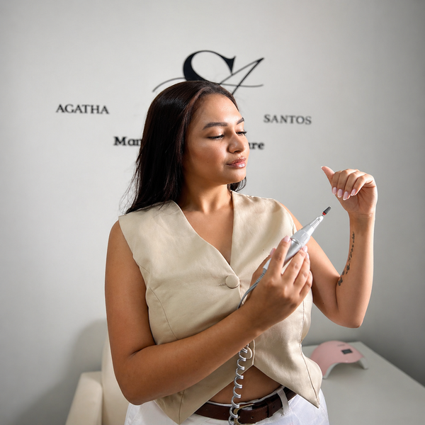
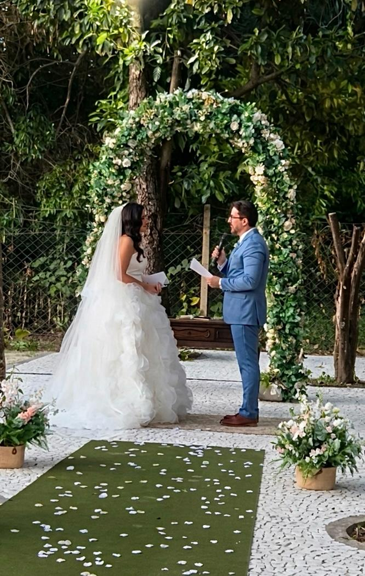

Social Media
Planejamento, linguagem visual e estratégia para redes sociais com posicionamento premium.
Social Media • Videomaker • Storymaker
Transformo registros do dia a dia em conteúdos que atraem, conectam e vendem.

Quem sou eu?
Com 2 anos criando conteúdo estratégico para redes sociais, atuo como social media, videomaker e storymaker para marcas que querem se comunicar com estética, presença e intenção.
Meu diferencial está em transformar roteiro, ângulos, músicas, cores e direção visual em conteúdos com personalidade e estratégia.
Serviços
Soluções criativas para marcas que querem aparecer com profissionalismo.
Planejamento, linguagem visual e estratégia para redes sociais com posicionamento premium.
Registros com direção, enquadramento e estética para marcas, produtos e bastidores.
Conteúdo em tempo real para criar presença, conexão e desejo no público.
Vídeos curtos com ritmo, roteiro e edição pensados para engajamento.
Captação ágil e elegante para eventos, lançamentos e experiências de marca.
Direção visual, fotos e vídeos para fortalecer a percepção profissional da marca.
Projetos
Uma curadoria visual de conteúdos, marcas, eventos e registros estratégicos.

Retratos profissionais com direção de imagem, iluminação suave e composição pensada para fortalecer a presença da marca.

Produto real, textura, composição e apelo visual para fortalecer marcas de alimentos nas redes sociais.


Logotipos organizados em carrossel com proporção preservada, fundo limpo e leitura premium.


Cerimônia e detalhes captados com delicadeza, composição elegante e foco emocional para contar a história do dia.
Post comemorativo organizado com estética elegante, mensagem de marca e composição visual pensada para datas especiais.
Resultados
Uma leitura clara da evolução de visualizações com gestão profissional.
25 Dez → 24 Jan
24 Jan → 22 Fev
Contato
Conteúdo com estética, direção e estratégia para marcas que querem se destacar.